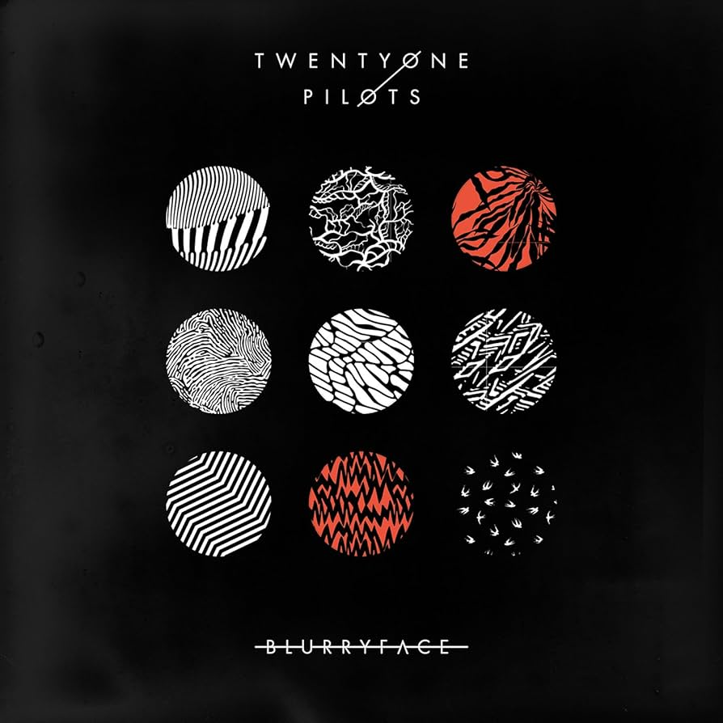

ARTISTA VERIFICADO
Twenty One Pilots
27.655.285 oyentes mensuales
Populares
1
Stressed Out
Blurryface
2.576.687.342
3:322
Ride
Blurryface
1.925.426.414
3:343
Chlorine
Trench
569.550.468
5:244
Tear in My Heart
Blurryface
598.362.854
3:085
My Blood
Trench
300.254.086
3:49Selección del artista
"TRENCH" OUT NOW!
Trench
Álbum
Títulos populares

Clancy
Álbum
Trench
Álbum
Blurryface
Álbum
Vessel
Álbum
Regional at Best
Álbum
Sobre el artista
#182
DEL MUNDO
27.655.285 oyentes mensuales
Twenty One Pilots (estilizado en minúsculas como twenty øne piløts) es un dúo musical estadounidense de Columbus, Ohio. La banda se formó en 2009 por el vocalista Tyler Joseph junto con Nick Thomas y Chris Salih, quienes la abandonaron en 2011. Desde su partida, la formación ha consistido en el cantante Tyler Joseph y el baterista Josh Dun. El grupo es principalmente conocido por los sencillos "Stressed Out", "Ride" y "Heathens". El grupo recibió un Premio Grammy al mejor pop de dúo/grupo en los Premios Grammy de 2017.
La banda lanzó de forma independiente dos álbumes Twenty One Pilots (2009) y Regional At Best (2011), antes de ser firmada por el sello discográfico Fueled by Ramen en 2012. Su debut en el sello, Vessel, fue lanzado en 2013. El dúo logró un éxito revolucionario con su cuarto álbum, Blurryface (2015), que produjo los exitosos sencillos "Stressed Out" y "Ride" y se convirtió en el primer álbum en la historia en el que cada canción recibió al menos una certificación de oro de la Asociación de Industria Discográfica de Estados Unidos.